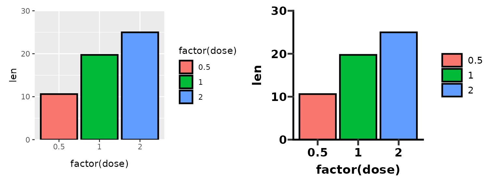
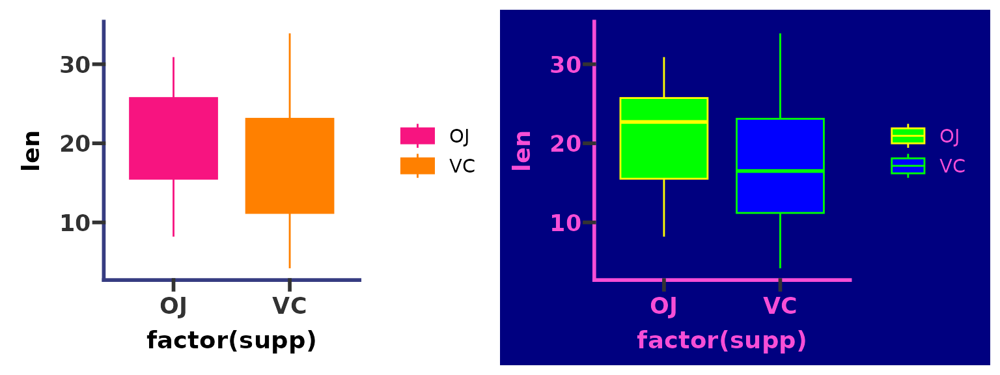
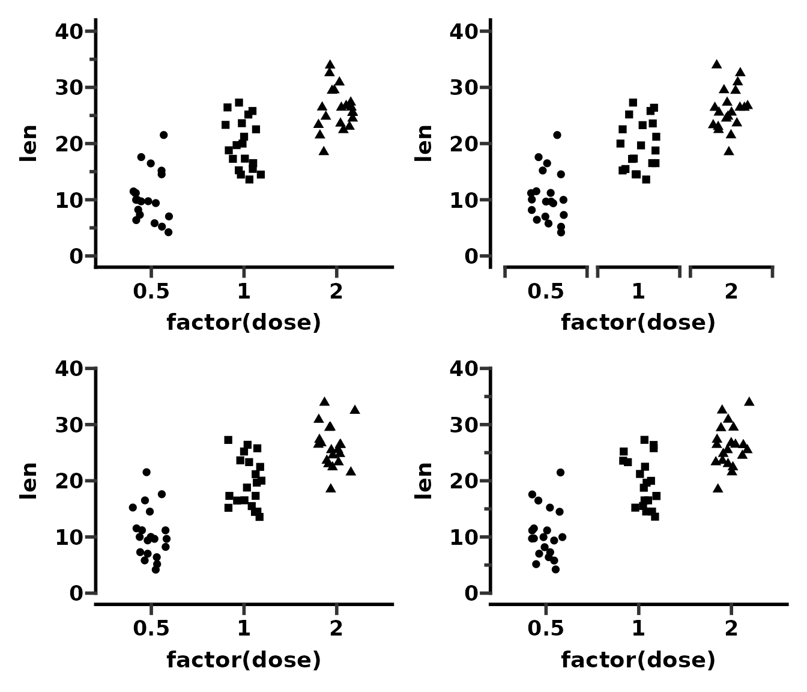

Getting Started
ggprism.RmdThe goal of this package is to enable R users to format their ggplots to look like they were made in GraphPad Prism. I moved away from Prism to R for statistics quite a while ago, however I missed the ‘look’ that GraphPad Prism graphs have. Which is how I got the idea to make this package.
This document outlines what features are available in ggprism and has links to guides with more detailed examples of how to use each function.
Themes
The most useful function in this package is theme_prism() which is a ‘complete’ theme which works just like any other standard ggplot2 theme e.g. theme_grey(). See this guide for more detailed usage examples.
The standard theme palette is "black_and_white" but there are many others which correspond to the colour schemes available in Prism. Go to the All Palettes page to see all the available palettes.
# Compare theme_grey() to theme_prism()
p1 <- ggplot(ToothGrowth, aes(x = factor(dose), y = len)) +
stat_summary(aes(fill = factor(dose)), na.rm = TRUE,
geom = "col", fun = mean, colour = "black", size = 0.9) +
scale_y_continuous(limits = c(0, 30), expand = c(0, 0))
p2 <- p1 + theme_prism(base_size = 14)
p1 + p2
# Compare some of the available theme palettes
p3 <- p1 + theme_prism(palette = "mustard_field", base_size = 14)
p4 <- p1 + theme_prism(palette = "flames", base_size = 14)
p3 + p4Colours, fills, and shapes
ggprism includes the functions scale_colour_prism()/scale_color_prism() and scale_fill_prism() which make the colour schemes from Prism available for use with ggplot2 geoms and stats. You can either use them with the default "black_and_white" theme or try matching themes and colour/fill scales.
See the this guide for more detailed usage examples.
# Compare some colour and fill palettes with default theme_prism()
p <- ggplot(ToothGrowth, aes(x = factor(supp), y = len)) +
geom_boxplot(aes(colour = factor(supp), fill = factor(supp))) +
theme_prism(base_size = 14)
p1 <- p + scale_colour_prism(palette = "floral") +
scale_fill_prism(palette = "floral")
p2 <- p + scale_colour_prism(palette = "flames") +
scale_fill_prism(palette = "flames")
p1 + p2
# Try using the same palette for colour, fill, and theme
p <- ggplot(ToothGrowth, aes(x = factor(supp), y = len)) +
geom_boxplot(aes(colour = factor(supp), fill = factor(supp)))
p3 <- p + theme_prism(palette = "candy_bright") +
scale_colour_prism(palette = "candy_bright") +
scale_fill_prism(palette = "candy_bright")
p4 <- p + theme_prism(palette = "neon") +
scale_colour_prism(palette = "neon") +
scale_fill_prism(palette = "neon")
p3 + p4
Additionally, scale_shape_prism() includes some shape scales which roughly match the shapes (and order of shapes) used in GraphPad Prism.
# Compare ggplot2 default shape order with ggprism default shape order
p1 <- ggplot(msleep[complete.cases(msleep), ],
aes(x = sleep_rem, y = sleep_total)) +
geom_point(aes(shape = factor(vore)), size = 3) +
theme_prism() +
theme(axis.title.y = element_blank())
p2 <- p1 + scale_shape_prism()
p1 + p2
Axes
ggprism includes several axis guides which can be used to change the look of continuous (or in some cases discrete) axes. These guides work best with theme_prism() but can also be used with any other ggplot2 theme which has axis lines e.g. theme_classic() or theme_bw().
See the this guide for more detailed usage examples.
# Show the 4 different axis guides included in ggprism
p <- ggplot(ToothGrowth, aes(x = factor(dose), y = len)) +
geom_jitter(aes(shape = factor(dose)), width = 0.2, size = 2) +
scale_shape_prism() +
theme_prism() +
theme(legend.position = "none")
p1 <- p + scale_y_continuous(limits = c(0, 40), guide = "prism_minor")
p2 <- p + scale_x_discrete(guide = "prism_bracket") +
scale_y_continuous(limits = c(0, 40))
p3 <- p + scale_y_continuous(limits = c(0, 40), guide = "prism_offset")
p4 <- p + scale_y_continuous(limits = c(0, 40), guide = "prism_offset_minor")
(p1 + p2) / (p3 + p4)
P-values
ggprism includes the add_pvalue() function to easily add p-values from a simple data.frame to your plots. This function is a re-written version of stat_pvalue_manual() from the ggpubr package. add_pvalue() is more flexible to different inputs than stat_pvalue_manual() and also allows you to change the look of the brackets and text more easily.
See the this guide for more detailed usage examples.
# Make a p-value table
df <- data.frame(
group1 = "OJ",
group2 = "VC",
p.adj = 0.0606,
y.position = 36
)
# Make a plot
p1 <- ggplot(ToothGrowth, aes(x = factor(supp), y = len)) +
geom_boxplot(aes(fill = factor(supp))) +
scale_fill_prism(palette = "candy_bright") +
theme_prism() +
theme(legend.position = "none")
# Add the p-value
p2 <- p1 + add_pvalue(df)
p1 + p2